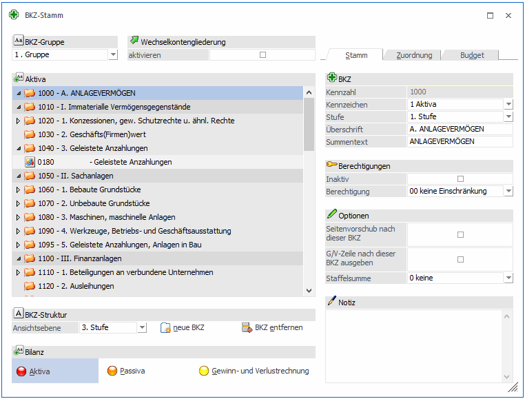
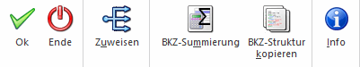

Der BKZ-Stamm wird über den Menüpunkt
1 WinLine FIBU
1 Stammdaten
1 BKZ-Stamm
aufgerufen. Es wird eine Tabelle, welche die BKZ-Struktur schematisch in einer Baumstruktur darstellt, angezeigt. In dieser Tabelle können die BKZ angelegt und bearbeitet werden.
Grundsätzlich können 3 verschiedene Bilanzgliederungsstrukturen (Gruppe 1, Gruppe 2 und Gruppe 3) angelegt und in weiterer Folge auch den Konten zugeordnet werden.
Die Bilanzgliederungskennzahl (BKZ) ist 9-stellig, alphanumerisch. Die Sortierung der BKZs ist linksbündig, d.h. es werden z.B. folgende BKZs nacheinander ausgegeben: 100, 1000, 1200, 120000, 1210, 2800 usw.
Eine BKZ-Nummer kann nur einmal existieren. Es ist aber möglich, z.B. die BKZ-Nummer 15000 für eine Aktiva-Position und die BKZ-Nummer 16000 für eine GuV-Position zu verwenden.
Innerhalb eines Bilanzbereiches werden die BKZs in numerisch aufsteigender Reihenfolge angedruckt. Pro Konto werden 2 BKZs festgelegt (bei Wechselkonten, z.B. dem Bankkonto kann der Saldo positiv oder negativ werden, je nach Vorzeichen wird die BKZ- oder BKZ-Wechselkonto für die Positionierung in der Bilanz herangezogen).
Wichtig 1
Um eine Staffelform zu erhalten, müssen alle BKZ der GuV-Rechnung der Stufe 1 mit Aktivierung der Staffel-Zwischensummen angelegt sein. Dadurch erhält man automatisch am Ende den Gewinn bzw. Verlust ausgewiesen (berechnet). Als Basis für die Staffelberechnung ist an erster (oberster) Stelle eine BKZ der Stufe 1 (mit Staffel-Zwischensummen) anzulegen. Diese summiert alle darunter stehenden BKZs der Stufe 2, bis wieder eine BKZ der Stufe 1 eingelesen wird.
Wichtig 2
Die erste BKZ der Aktiva und auch der Passiva muss der Stufe 1 zugeordnet sein, damit alle Summen korrekt gerechnet werden können.
Hinweis
Ein Andruck des Gewinn- und Verlustvortrages lt. der gesetzl. Staffelrechnung ist dann gegeben, wenn in den FIBU-Parametern eine Hinterlegung des GuV-Vortragskontos erfolgt ist.

Die Ordnerstruktur zeigt an, zu welcher BKZ-Stufe der jeweilige Eintrag zugeordnet ist. Mittels Doppelklick auf einen Ordner oder Klick auf das w vor einem Ordner der Stufe 1 bis 5 wird der Ordner inklusive der Unterordner und dazugehörigen Konten geöffnet bzw. geschlossen.
Anzeige der BKZ-Struktur
Ø Ansichtsebene
Für die Ansichtsebene der Tabelle wird die Stufe ausgewählt und mit Enter bestätigt. Es werden alle BKZs bis zu der ausgewählten Stufe und alle zugeordneten Konten bis zu der darüber liegenden Stufe angezeigt.
Hier stehen 5 Stufen zur Verfügung, wobei 1 die höchste und 5 die niedrigste Stufe ist.
Ø Aktiva
Durch Aktivierung der Aktiva werden alle BKZs und Konten bis zu der ausgewählten Stufe angezeigt.
Ø Passiva
Durch Aktivierung der Passiva werden alle BKZs und Konten bis zu der ausgewählten Stufe angezeigt.
Ø Gewinn- und Verlustrechnung
Durch Aktivierung der GuV werden alle BKZs und Konten bis zu der ausgewählten Stufe angezeigt.
Eingabefelder
Ø BKZ-Gruppe
In diesem Feld wird die BKZ-Gruppe ausgewählt, die angezeigt und bearbeitet werden soll.
Zur Verfügung stehen 3 Gruppen:
ü 1. Gruppe
ü 2. Gruppe
ü 3. Gruppe
Ø Wechselkontogliederung
Ist diese Checkbox aktiviert, wird die BKZ-Struktur der BKZ Wechselkonten angezeigt.
Pro Konto werden 3 BKZs festgelegt (bei Wechselkonten, z.B. dem Bankkonto kann der Saldo positiv oder negativ werden, je nach Vorzeichen wird die BKZ- oder BKZ-Wechselkonto für die Positionierung in der Bilanz herangezogen).
Ø BKZ-Nummer
Anzeige der 9-stelligen BKZ-Nummer.
Ø Inaktiv
Wenn ein Datensatz auf Inaktiv gesetzt wird, hat das vorerst nur die Auswirkung, dass er nicht mehr im Matchcode angezeigt wird. Durch einen Reorg kann dieser Datensatz aus der Datenbank entfernt werden. Voraussetzung dafür ist, dass für den Datensatz keine Bewegungsdaten (Buchungen etc.) vorhanden sind und diese BKZ nicht in Konten verwendet wird. Nähere Informationen zum Reorganisieren entnehmen Sie bitte dem WinLine START-Handbuch.
Ø Berechtigung
Für jede BKZ kann ein Berechtigungsprofil vergeben werden. Wenn der Anwender eine BKZ aufruft, wird geprüft, ob der Anwender einer Benutzergruppe zugeordnet wurde, welche in dem jeweiligen Profil enthalten ist und ob somit eine Bearbeitung erlaubt wäre (nähere Informationen entnehmen Sie bitte dem WinLine ADMIN - Handbuch).
Hinweis
Benutzern des Typs "Administrator" oder mit der Administratorenberechtigung "Benutzeradministrator" steht in der Auswahlbox der Punkt ">> Neues Profil" zur Verfügung. Über die Anwahl dieses Eintrags kann in der Folge ein neues Berechtigungsprofil angelegt werden.
Ø Kennzeichen
Die BKZ wird einem Kennzeichen zugeordnet, welches dann die Position in der Bilanz bestimmt. Zur Auswahl stehen:
ü 1 Aktiva
ü 2 Passiva
ü 3 Erlöse
ü 4 Aufwendungen
Ø Stufe
Hier stehen 5 Stufen zur Verfügung, wobei 1 die höchste und 5 die niedrigste Stufe ist.
Üblicherweise werden Konten nur BKZs der jeweils niedrigsten Stufe zugeordnet, um die anderen Stufen für Summenbildungen verwenden zu können.
Ø Überschrift/Summentext
Die Bezeichnung einer BKZ kann direkt in den Feldern Überschrift und Summentext geändert werden. Die maximale Länge beträgt jeweils 50 Zeichen.
Ø Seitenvorschub nach dieser BKZ
Das Vorschubkennzeichen beeinflusst die Gestaltung des Bilanzausdruckes. Nach Bilanzgliederungskennzahlen, die mit dem Vorschubkennzeichen angelegt wurden, wird bei Ausdruck der Bilanz eine neue Seite begonnen.
Ø G/V Zeile nach dieser BKZ ausgeben
Durch Verwenden dieser Funktion ist es möglich, den Gewinn / Verlust unter die entsprechende BKZ anzudrucken, bei der diese Checkbox gesetzt wird. Z.B. kann hiermit erreicht werden, dass der Gewinn unter dem Eigenkapital angedruckt wird. Voraussetzung dafür ist, dass Salden auf der entsprechenden BKZ vorhanden sind.
Wird die Checkbox nicht gesetzt, so wird die G/V-Zeile am Ende angedruckt.
Ø Staffelsumme
Für die Ausgabe der G/V-Rechnung nach RLG (Rechnungslegungsgesetz) ist es erforderlich, dass bei allen BKZs der Stufe 1 der Radiobutton Staffel-Zwischensumme "immer" aktiviert wird. Nur SO erhalten Sie die geforderte STAFFELRECHNUNG. Um den Vorjahresgewinn in der Staffel anzudrucken ist in den FIBU-Parametern das Gewinnvortragskonto einzutragen.
ü Keine
Die Summen der BKZs
werden fortlaufend angedruckt, ohne eine Staffel-Zwischensumme zu bilden. Am
Ende wird der Jahres-Gewinn/-Verlust angedruckt.
ü Immer
Es werden für alle BKZ
der Stufe 1 Staffel-Zwischensummen gebildet und angedruckt, unabhängig davon, ob
es veränderte Werte bei den BKZ gibt oder nicht.
ü Bei veränderter Summe
Es werden
nur jene BKZ der Stufe 1 angedruckt, bei denen es veränderte Werte gegenüber
einer vorhergehenden BKZ gibt.
Ø Notiz
Zu jeder BKZ kann eine Zusatzinformation in Form eines Notizblockes gespeichert werden (Unformatierter Fließtext, z.B. Kommentar zur Bilanzposition).
Diese Texte können in der Bilanz auch angedruckt werden (bezüglich Formularanpassung wenden Sie sich bitte an Ihren mesonic-Betreuer).
Buttons

Ø OK
Durch Drücken der F5-Taste (= OK-Button) werden die Änderungen gespeichert.
Ø Ende
Durch Drücken der ESC-Taste (entspricht dem Ende-Button) wird das Fenster geschlossen.
Ø Zuweisen
Über den Zuweisen-Button können in dem Programm Zuweisung mehrere Konten einer BKZ zugewiesen werden. Wenn die Zuweisung über diesen Button geöffnet wird, wird der BKZ-Stamm selbst geschlossen.
Ø BKZ-Summierung
Mit diesem Button kann die BKZ-Summierung durchgeführt werden.
Grundsätzlich sind die Salden der BKZ in der BKZ-Info aktuell summiert. Wird jedoch z.B. ein Konto einer anderen BKZ zugeordnet so kann der Summieren-Button dazu verwendet werden, um die Werte zu aktualisieren.
Ø BKZ-Struktur kopieren
Durch Anwählen dieses Buttons öffnet sich ein weiteres Fenster in dem Einstellungen zum Kopieren von BKZs vorgenommen werden können. Kopiert können dabei BKZs auf verschiedene Mandanten, Wirtschaftsjahre, und/oder BKZ-Gruppen werden.
Ø Info
Durch Anklicken des Info-Buttons werden alle Werte inkl. Grafik der gewählten BKZ angezeigt.
Fensterbuttons
Ø neue BKZ
Durch Anklicken des Buttons können neue BKZs angelegt werden. Der Fokus springt automatisch auf das Feld BKZ und es muss zuerst eine BKZ-Nummer vergeben werden. Anschließend können die restlichen Stammdaten eingegeben werden. Wird die Eingabe gespeichert, wird die neu angelegte BKZ anhand der BKZ-Nummer und des Kennzeichens in die BKZ-Struktur einsortiert.
Ø BKZ entfernen
Durch Anwahl des Entfernen-Buttons kann die ausgewählt BKZ gelöscht werden. Voraussetzung dafür ist, dass diese BKZ bei keinem Konto mehr hinterlegt ist.
Ist die BKZ bei einem Konto hinterlegt, kommt eine Fehlermeldung.
Hinweis
In der Aktiva und Passiva muss die erste BKZ der Stufe 1 zugeordnet sein. Wird diese BKZ gelöscht, dann erhält automatisch die nächste BKZ, die dann die erste BKZ im Bereich Aktiva/Passiv wird, die Stufe 1.